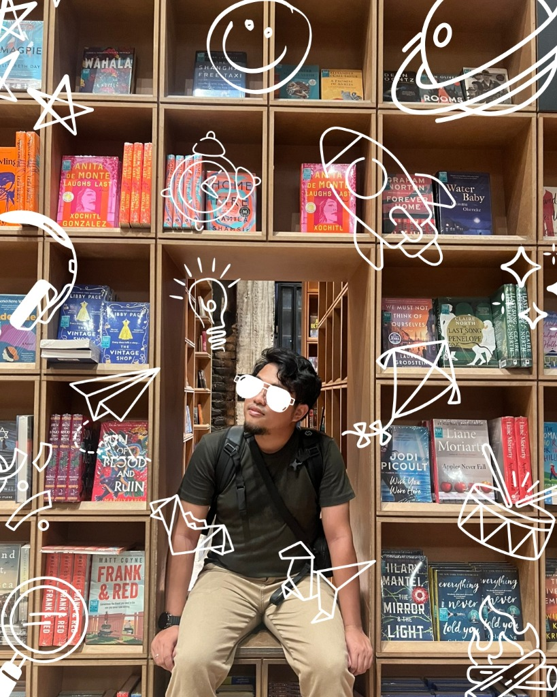

Why Your CRM Is Failing Your Customers
Most CRM systems are built for the company, not the customer. Here's how to redesign yours around genuine human needs.
Trying to figure out how intelligence, business, and kindness can work together.
I work at the intersection of CRM, consulting, and human behavior — mostly asking how systems can be designed to actually serve people, not just measure them.

I've spent a good chunk of my life trying to understand why people — customers, organizations, teams — behave the way they do. Not in a clinical way, but because I genuinely find it fascinating. And a little puzzling. And sometimes, deeply moving.
My background is in CRM and consulting, but what I actually care about is a harder question: can a business be well-designed and kind? I don't have a perfect answer. But it's the question I keep coming back to — in my work, in my writing, and in the projects I choose to take on.
I tend to like drawing things out on paper until they make sense. If I can help someone else see the shape of a messy problem, that feels like a good day's work.
A lot of business processes are designed around the assumption that humans are predictable. They're not. I try to keep that in mind.
I've been wrong about a lot of things. Writing and consulting have mostly been how I figure out what I actually think — not just what sounds impressive.
Can ambition and kindness coexist? Can a business be profitable and still treat people well? I don't know for certain, but I'd like to spend my career finding out.
Most CRM systems are designed to track customers, not understand them. I'm interested in the gap between those two things — and what happens when you try to close it.
I like sitting with a complicated problem and asking: what's actually going on here? Sometimes the answer is structural. Sometimes it's cultural. Often it's both. I try not to skip to the framework before understanding the mess.
People rarely do things for the reasons they say they do. Understanding that gap — with curiosity rather than judgment — is something I find endlessly interesting, and genuinely useful in almost every context.
I tend to zoom out a lot. Not because the details don't matter, but because many problems that look like execution failures are actually design failures. Finding that structural root is usually where things get interesting.
A comprehensive methodology that reframes how businesses think about customer relationships — moving from transactional metrics to genuine human connection. Combining psychology, systems design, and ethics.
A series of essays and frameworks exploring the intersection of business strategy, human psychology, and ethical systems design — for practitioners and curious minds alike.
Most CRM systems are built for the company, not the customer. Here's how to redesign yours around genuine human needs.
The same anxiety that holds us back can, when understood clearly, become the most powerful motivator we have.
A framework for building businesses that are profitable AND humane — and why these two goals are more compatible than most think.
Whether you want to talk about a project, push back on something I wrote, or just ask a question — send me a message. I read and reply to everything myself.